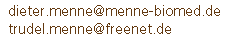
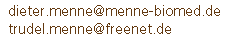
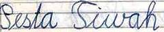

Menne-Indonesia
Über menne-indonesia
Meiner Mutter zum 80. Geburtstag 2003
 

Wenn man mit dem Mauszeiger über die Weltkugel oben rechts fährt, erfährt man, wo das Bild gemacht wurde. Auf den Übersichtsseiten, kann man durch Klick auf die kleinen Bildchen direkt zu der Seite mit dem Bild springen.
Wenn Worte übersetzt oder erklärt sind, dann sind sie unterstrichen. Lassen Sie den Mauszeiger kurz darauf ruhen, dann kommt die Erklärung.
Texte aus meinen zeitgenössischen Schulaufsätzen sind mit Ausschnitt markiert.

In Indonesien gab es in den 60er-Jahren eine Rechtschreibreform. Tjirebon wurde zu Cirebon, Djogdjakarta, manchmal auch Djogjakarta geschrieben, wurde zu Yogyakarta, betjak zu becak. Da teilweise meine alten Schulaufsätze zitiert werden, und meine Mutter die neue Schreibweise nie angenommen hat, obwohl sie in den 80er Jahren fast ein Jahr in Indonesien gereist ist, bleibt das Durcheinander hier erhalten.